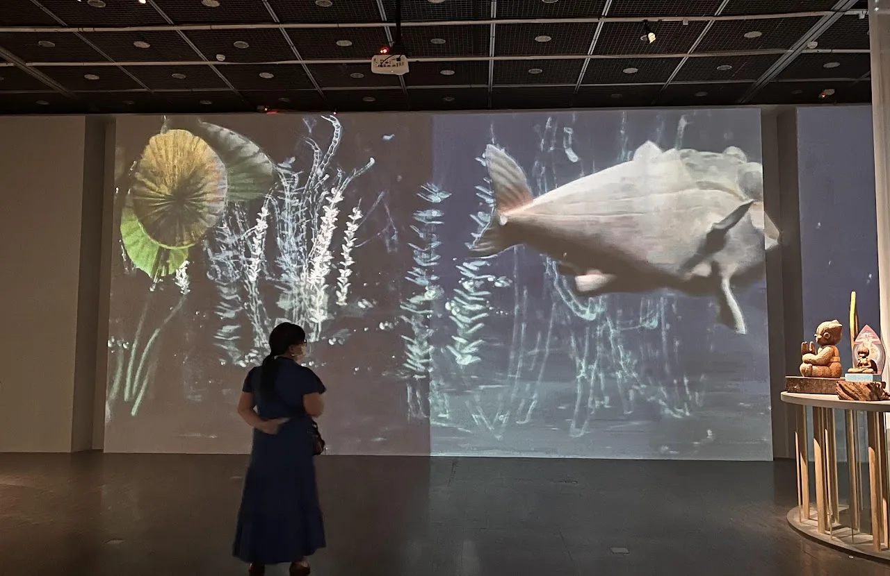
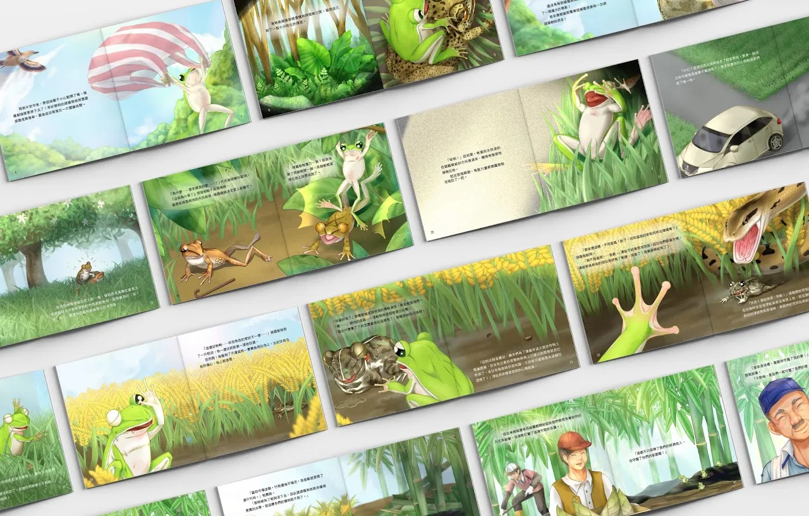
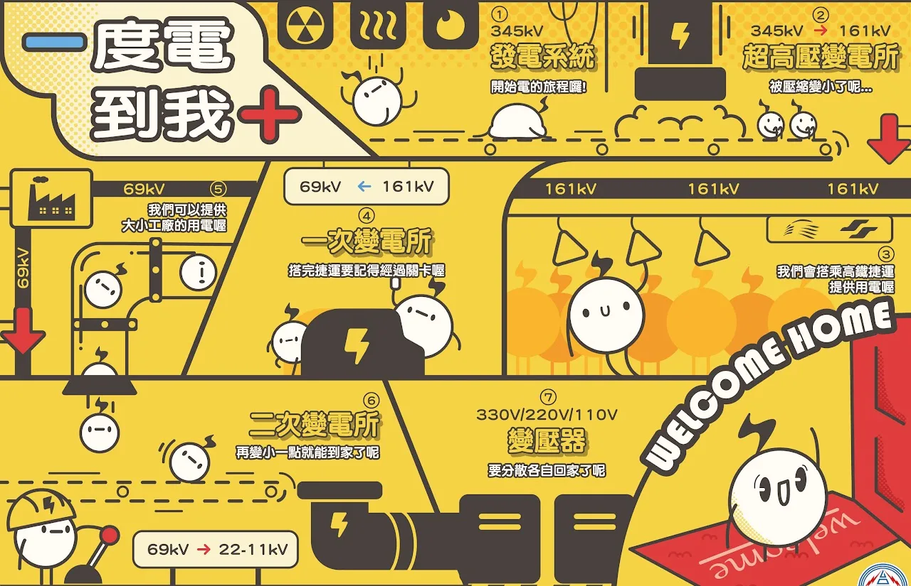
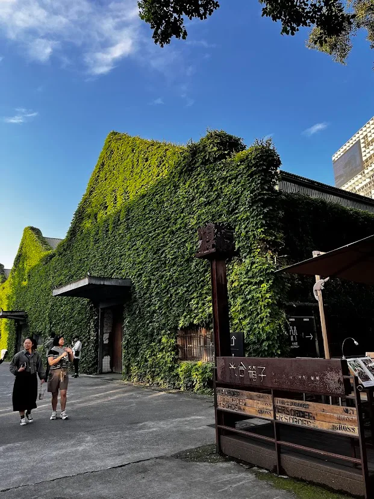

4
4

HONOR ROLL獲獎作品
EXPLORE
SHORTLISTED WORKS入圍作品
EXPLOREHONOR ROLL獲獎作品
若不驅動，可能不知道自己會有如此潛力，能跑得這麼好
VIEW ALL


TALKS演講分享
LECTURES & SHARING
業界設計師、動畫師、字體與玩具設計師走進課堂的分享。
READ THE TALKSSHORTLISTED入圍作品
能打進第一波的競爭，相當不易!
VIEW ALL

FIELD TRIPS走訪實境
OUT IN THE FIELD
走出教室，到文創園區、美術館與工作室看設計如何發生。
SEE THE FIELD TRIPS